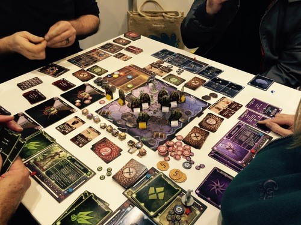

테마게임(Ameritrash)
테마게임은 미국식 스타일의 보드게임을 뜻한다. 이름 그대로 게임의 테마를 살리는데 치중한 게임이다.
어디까지나 스타일을 말하는 것이기에 미국산 게임 = 테마게임은 아니다.
보통 다음과 같은 특징을 지니고 있지만 항상 그런 것은 아니다.
- 세계관이나 캐릭터를 강조한다.
- 주사위로 대표되는 운적 요소를 강조한다.
- 전략성은 적거나 아예 없다.
- 컴포넌트나 카드가 많다.
테마게임은 미국식 스타일의 보드게임을 뜻한다. 이름 그대로 게임의 테마를 살리는데 치중한 게임이다.
어디까지나 스타일을 말하는 것이기에 미국산 게임 = 테마게임은 아니다.
보통 다음과 같은 특징을 지니고 있지만 항상 그런 것은 아니다.
이전 항목에는 이런 식으로 적혀있었는데 컴포넌트의 양이 많고 세팅이 복잡한 유로 게임 역시 굉장히 많다. 단순하게 볼 문제는 아니다.
사실 정의가 명확치는 않은 단어다. 보드게임 시장이 성장하면서 테마게임에서도 메카닉이 중시되기 시작했기 때문이다. 엘드리치 호러나 로빈슨 크루소같은 협력 게임이 그렇고, 1회용이지만 테마와 게임성을 동시에 살리는 레거시 게임도 늘어나는 추세이다. 펜데믹 레거시나 글룸헤이븐은 보드게임긱 1위에 집권했다. 메이지 나이트는 테마게임이지만 굉장히 좋은 메카닉을 가지고 있어서 유로게임으로 보는 사람도 있다. 가장 근접한 정의는 '승점보단 승패 자체를 겨루는 게임' 에 가깝다.
